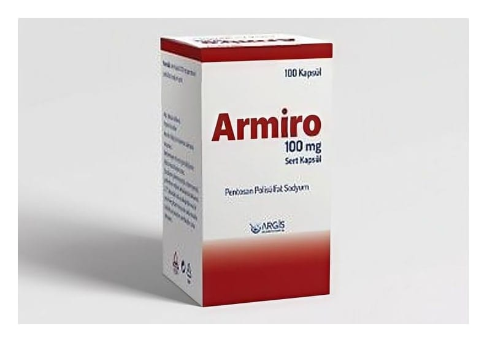

Armiro 100 mg Sert Kapsül, 100 Adet

Ne için kullanılır
KT · Bölüm 1• ARMİRO, 100 mg pentosan polisülfat sodyum içeren beyaz, opak renkte kapsül şeklinde sunulmuştur. Her bir kutu 100 kapsül içerir. • ARMİRO, yetişkinlerde mesane duvarındaki birçok küçük kanama veya belirgin lezyon ve orta ila şiddetli ağrı ve sık idrara çıkma dürtüsü ile karakterize mesane ağrısı sendromunu tedavi etmek için kullanılır. Reçeteli bir ilaçtır. • Aktif madde olarak pentosan polisülfat sodyum içeren ARMİRO, kullanıldıktan sonra idrara geçer ve mesanenin iç yüzeyine bağlanarak koruyucu bir tabaka oluşturmaya yardımcı olur.